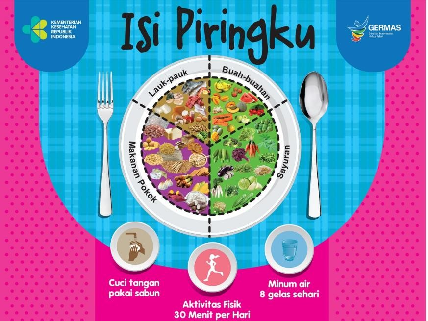
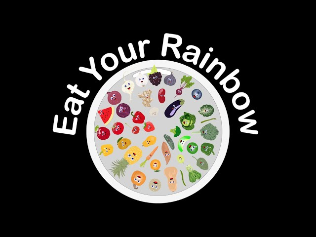
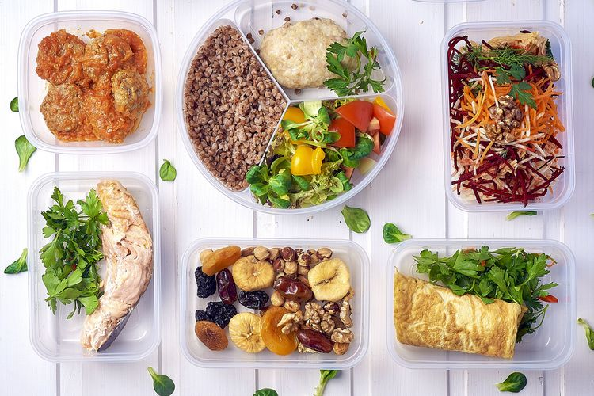
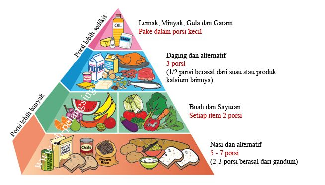

Pola makan sehat dan bergizi merupakan dasar utama dalam menjaga kesehatan tubuh karena makanan adalah sumber energi dan zat pembangun bagi tubuh. Setiap orang perlu mengonsumsi makanan yang mengandung karbohidrat, protein, lemak sehat, vitamin, dan mineral dalam jumlah seimbang agar tubuh dapat berfungsi dengan baik. Karbohidrat berperan sebagai sumber energi utama, sementara protein membantu memperbaiki dan membangun jaringan tubuh. Lemak sehat, seperti yang terdapat pada ikan dan kacang-kacangan, penting untuk kesehatan otak dan organ tubuh lainnya. Selain itu, vitamin dan mineral yang banyak terdapat pada buah dan sayur berfungsi menjaga daya tahan tubuh agar tidak mudah sakit. Kebiasaan makan juga perlu diperhatikan, seperti makan secara teratur dan tidak melewatkan sarapan agar tubuh memiliki energi sejak pagi. Mengurangi konsumsi makanan cepat saji, makanan tinggi gula, dan minuman bersoda juga sangat dianjurkan untuk mencegah berbagai penyakit. Minum air putih yang cukup setiap hari membantu menjaga keseimbangan cairan dalam tubuh dan mendukung proses metabolisme. Dengan menerapkan pola makan yang sehat dan seimbang, seseorang dapat meningkatkan kualitas hidup dan menjaga tubuh tetap bugar.

